CS 180 · Computational Photography
Fun with Filters and Frequencies
I treated images as signals: I built convolution from scratch and used derivative filters to find edges, then used Gaussian low- and high-pass filtering to sharpen photos, make hybrid images that change with viewing distance, and blend photos seamlessly one frequency band at a time.
Part 1 · Fun with Filters
Convolution slides a small filter over the image. At every output pixel, it multiplies the filter against that pixel's neighborhood and adds up the products. The filter is flipped 180° first (that flip is what makes it convolution rather than correlation). To keep the output the same size as the input, the image is zero-padded on every side by half the filter size.
Four loops: over output pixels (i, j), then over filter entries (u, v)
def conv_four_loops(img, kernel):
kernel = kernel[::-1, ::-1] # flip
kh, kw = kernel.shape
ph, pw = kh // 2, kw // 2
padded = np.pad(img, ((ph, ph), (pw, pw)))
H, W = img.shape
out = np.zeros((H, W))
for i in range(H):
for j in range(W):
total = 0
for u in range(kh):
for v in range(kw):
total += padded[i+u, j+v] * kernel[u, v]
out[i, j] = total
return outTwo loops: slice the neighborhood, multiply element-wise, sum
def conv_two_loops(img, kernel):
kernel = kernel[::-1, ::-1]
kh, kw = kernel.shape
padded = np.pad(img, ((kh//2, (kh-1)//2),
(kw//2, (kw-1)//2)))
H, W = img.shape
out = np.zeros((H, W))
for i in range(H):
for j in range(W):
patch = padded[i:i+kh, j:j+kw]
out[i, j] = np.sum(patch * kernel)
return outBoth match scipy.signal.convolve2d(img, k, mode="same", boundary="fill") to floating-point
precision (np.allclose is true for every filter). Runtimes on my photo:
| kernel | 4 loops | 2 loops | scipy | matches scipy |
|---|---|---|---|---|
| box | 0.534 s | 0.077 s | 3.30 ms | yes |
| Dx | 0.024 s | 0.076 s | 0.22 ms | yes |
| Dy | 0.027 s | 0.076 s | 0.34 ms | yes |
Image size: 200 × 268 pixels.
Runtime. scipy is 100–300× faster than either of mine because it runs compiled code instead
of Python loops. For the 9×9 box filter, two loops beat four loops by about 7×, since each pixel's 81
multiply-adds happen in one numpy call. For the 2-entry Dx/Dy filters it flips: four loops
is about 3× faster, because the per-pixel cost of slicing and calling np.sum outweighs two
plain Python multiplications.
Boundaries. My functions pad with zeros, the same as scipy's boundary="fill", which is why they
match. Zero padding acts like a black frame around the picture: the box-filtered image visibly darkens along its
border, and the derivative images show a false edge along the frame. scipy also offers "symm" (mirror the
edge pixels) and "wrap", which avoid this. I use "symm" in the rest of the project.
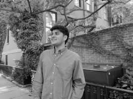
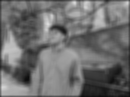
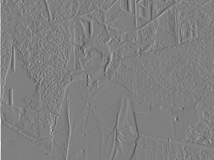
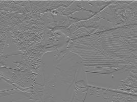
Derivative images use gray = 0, white = positive, black = negative.
Convolving the cameraman image with Dx gives the horizontal change in brightness, which lights up vertical edges like the tripod legs. Dy gives the vertical change, which lights up horizontal edges like the horizon and the camera body. The gradient magnitude √(dx² + dy²) combines the two into a single "how fast is brightness changing here" image that doesn't depend on edge direction.
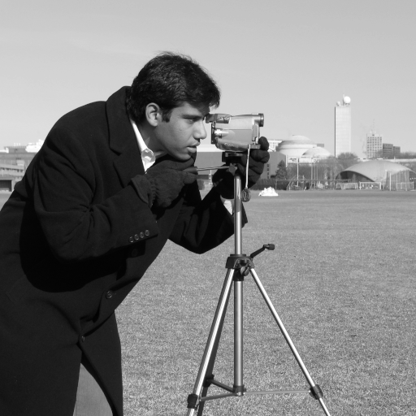
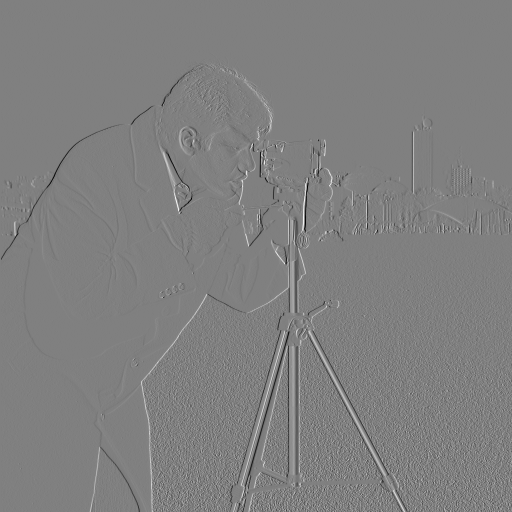
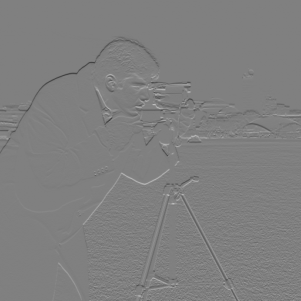
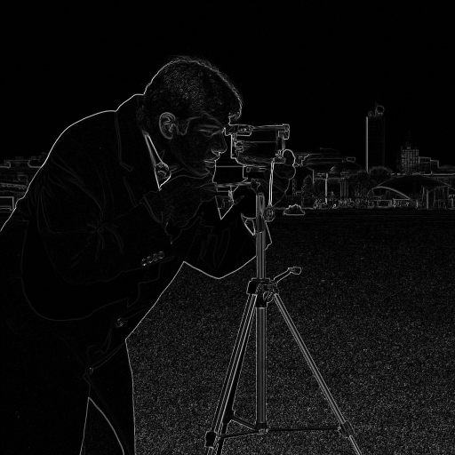
To get an edge image, I keep pixels whose magnitude is above a threshold. The grass is the hard part: its texture produces many small gradients. At 0.15 (on a 0–1 image) the grass becomes speckle; at 0.40 the coat and tripod outlines break apart. I chose 0.25: the man, camera and tripod stay connected and most of the grass noise is gone. The tradeoff is losing some faint background buildings, which I accepted to keep noise down.
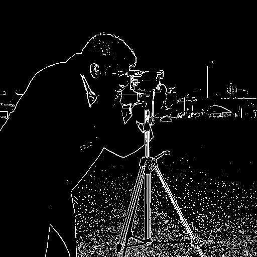
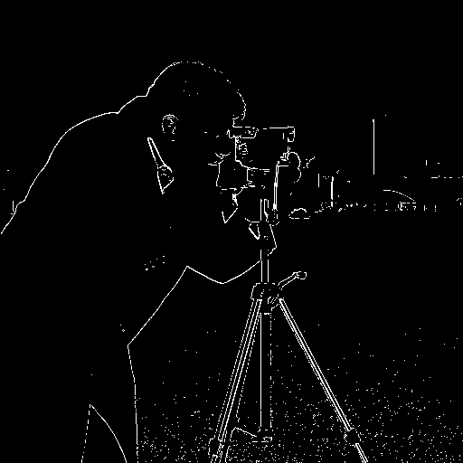
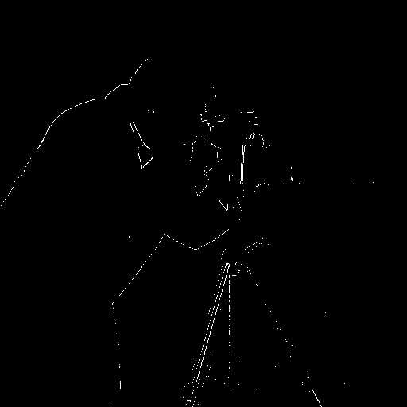
The finite-difference result is noisy because a derivative amplifies pixel-to-pixel noise. Blurring first
with a Gaussian G (σ = 1.5, 11×11, built with cv2.getGaussianKernel and an outer product with its
transpose) removes that noise before differentiating.
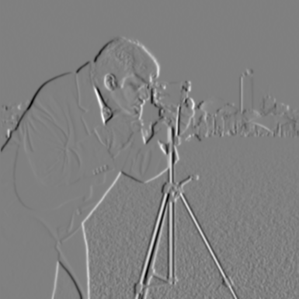
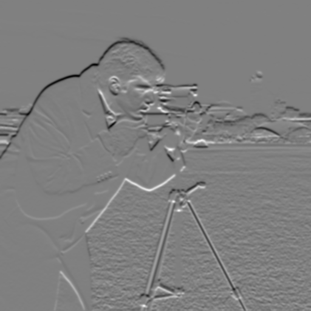

What changed: the edges are smoother, thicker and continuous, and the grass speckle is nearly gone. Smoothing lowers every gradient value, so the threshold drops to 0.07. The cost is that very fine detail disappears and edge positions are slightly less precise.
Convolution is associative, so (I * G) * Dx = I * (G * Dx). Building the derivative-of-Gaussian filters once gives the same result with a single convolution per direction:
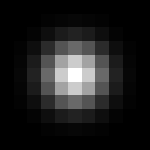
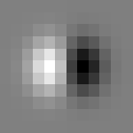
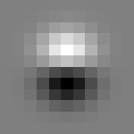
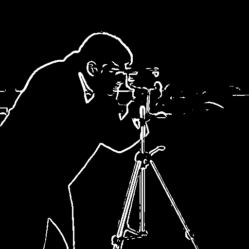
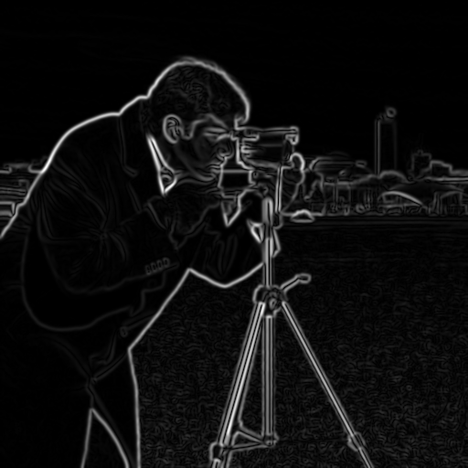

Verified: away from the border (where the two methods pad differently), the largest difference between the two magnitude images is about 10−15, which is floating-point rounding.
At each pixel, the gradient (dx, dy) points in the direction brightness increases fastest. I compute its angle as θ = atan2(−dy, dx) (dy is negated because image rows count downward) and map θ ∈ [−π, π] onto hue ∈ [0, 1] in HSV. Hue is circular, so −π and π get the same color, which is right for a direction. Saturation is 1 and value is the gradient magnitude, so flat regions stay dark and only edges are colored. The two sides of a thin object, like a tripod leg, get opposite colors because the gradient flips direction across it.
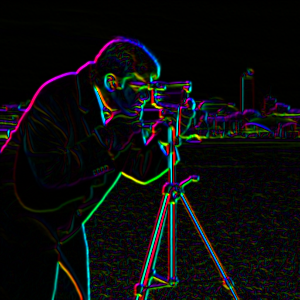
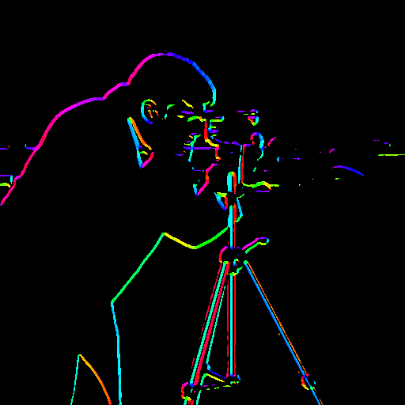
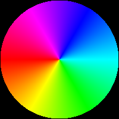
Part 2 · Fun with Frequencies
A Gaussian blur keeps only the low frequencies, so subtracting it from the image leaves the high frequencies: edges and texture. Adding a multiple α of those back makes the image look sharper:
fsharp = f + α(f − f * G) = f * ((1 + α)δ − αG)
where δ is the unit impulse. The right-hand side is one filter, the unsharp mask, so sharpening takes a single convolution. It matches the two-step version to within 10−15. I used σ = 2 and α = 1.5.
Taj Mahal
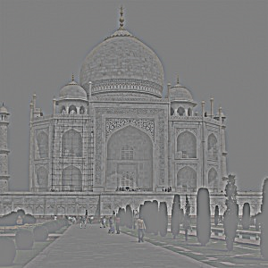
The sharpened version brings out the marble carvings, the edges of the domes, and the row of trees. Increasing α strengthens edges further until bright and dark halos appear along them.
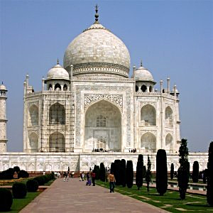
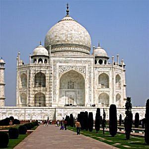
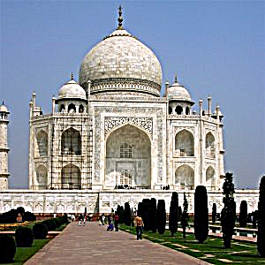
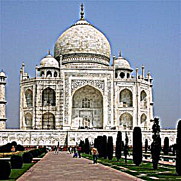
My image: birds over the beach
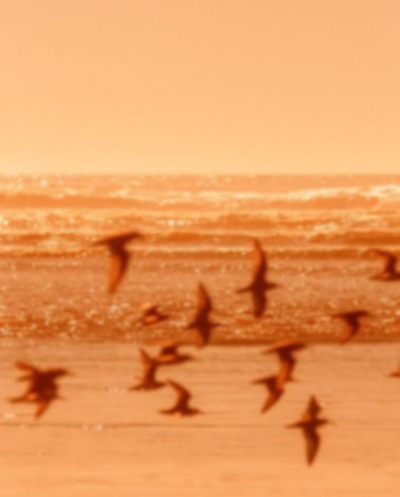
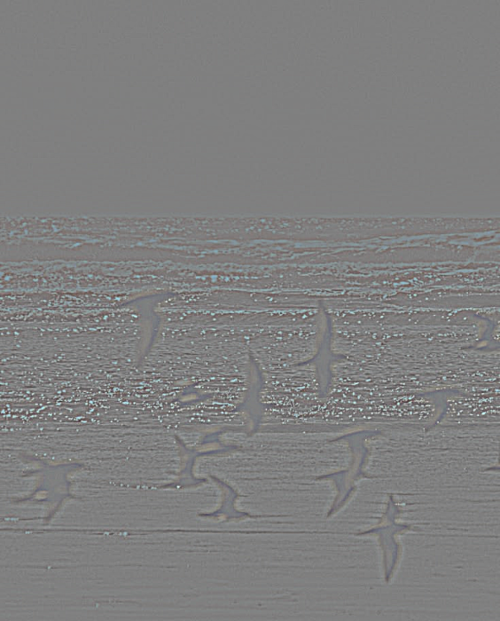
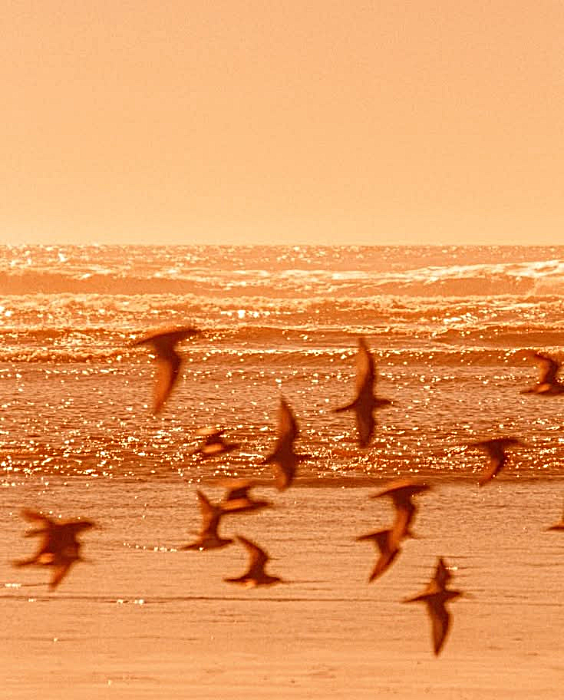
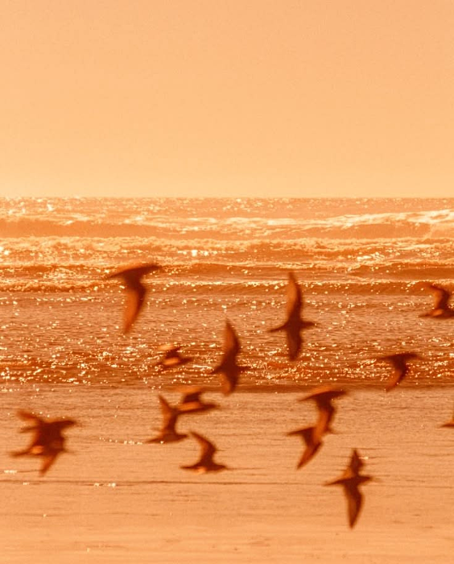
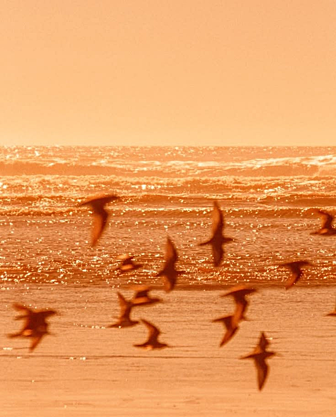
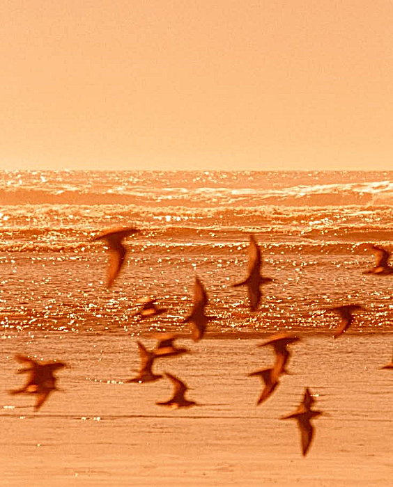
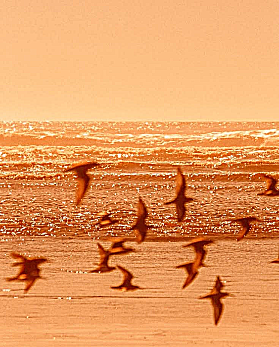
The bird silhouettes get darker, crisper outlines, and the glints on the water pop. The birds never become truly sharp, though: they were out of focus to begin with, and sharpening can only boost edges that are still in the image. It can't recreate detail that was never captured.
Evaluation: blur a sharp photo, then sharpen it again
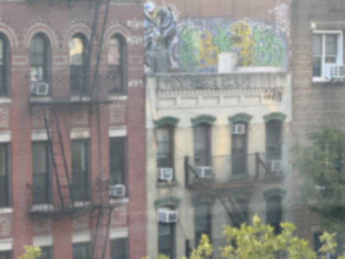
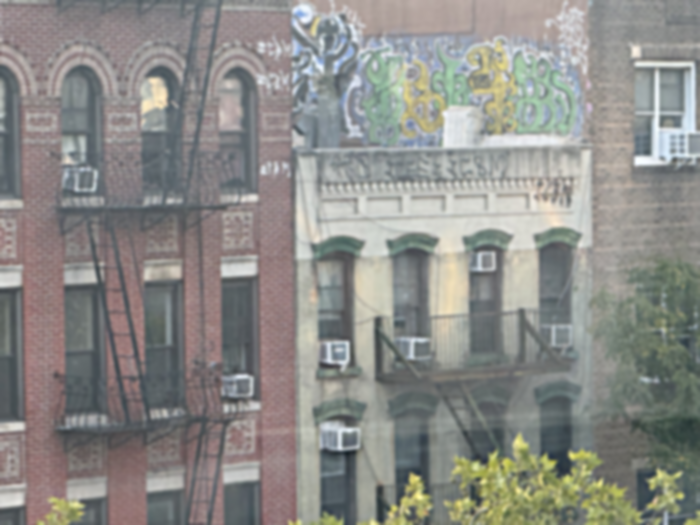
The re-sharpened photo looks much crisper than the blurred one: window frames, bricks and the fire escapes regain contrast. Compared with the original, though, it is not a recovery. The thin railing bars, the small graffiti lettering and the brick mortar lines were erased by the blur, and nothing can bring them back. Sharpening also adds faint halos around the high-contrast edges that the original never had. Blurring removes high frequencies; sharpening only amplifies the ones that survived.
Following Oliva, Torralba & Schyns (2006): up close, high frequencies dominate what we see; from far away, only low frequencies are visible. A hybrid adds the low frequencies of one image (Gaussian blur, σlow) to the high frequencies of another (image minus its Gaussian blur, σhigh). I align each pair first by clicking the two eyes in both images and warping the second image with a similarity transform (rotation, scale and translation).
Derek + Nutmeg: full process

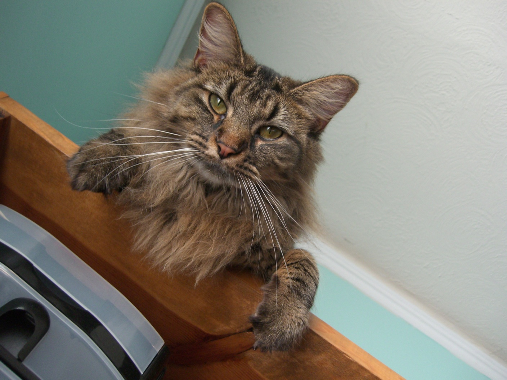
I clicked both eyes in each photo, then rotated, scaled and shifted Nutmeg so her eyes land on Derek's. The aligned pair and the filtered versions:
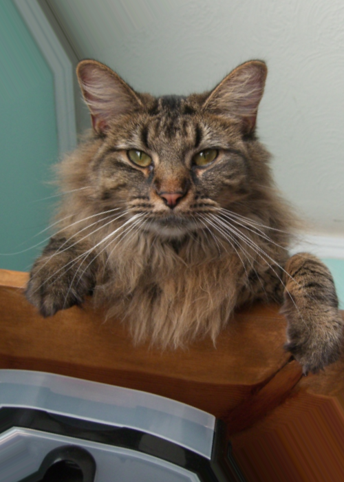
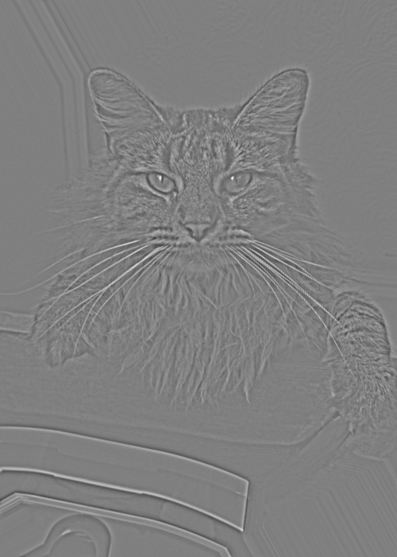
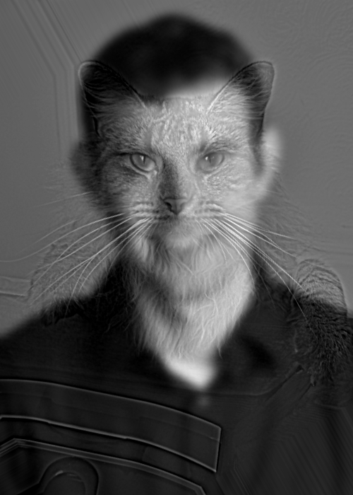
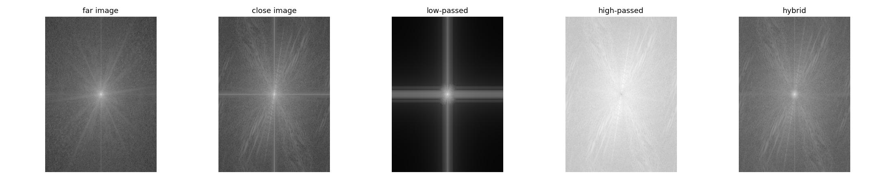
Frequency analysis. Both inputs have energy spread across all frequencies, with the bright center being the low frequencies. The low-passed Derek keeps only a small bright blob in the center. The high-passed Nutmeg has its center suppressed and keeps the outer spread. The hybrid's spectrum is the two combined: Derek's center plus Nutmeg's outer ring.
Cutoff frequencies. A Gaussian with standard deviation σ falls to half strength at about 0.19/σ cycles per pixel. With σlow = 6, Derek keeps frequencies below roughly 0.031 cycles/pixel; with σhigh = 3, Nutmeg keeps those above roughly 0.062. I picked these by trying values: a smaller σlow let Derek's features show through up close, and a larger σhigh let the cat's fur overwhelm Derek even from a distance. Leaving a gap between the two cutoffs keeps the two images from competing in the middle frequencies.
Me, now and older
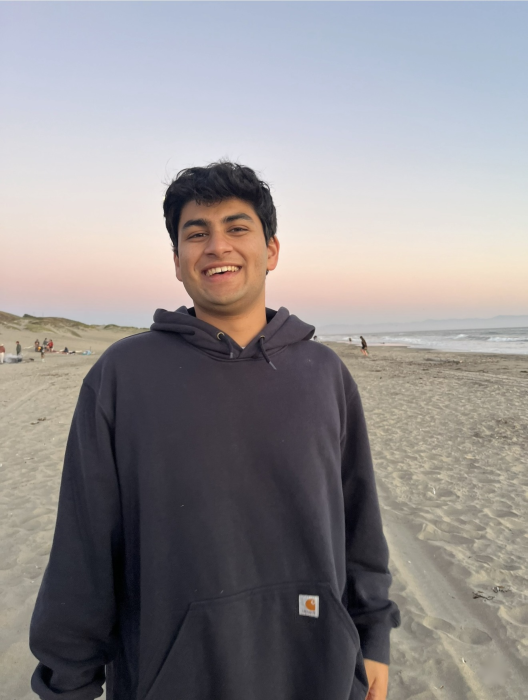
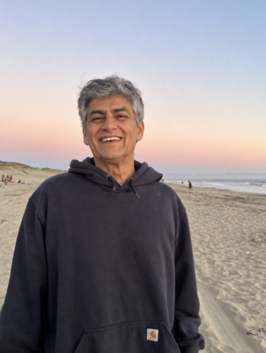
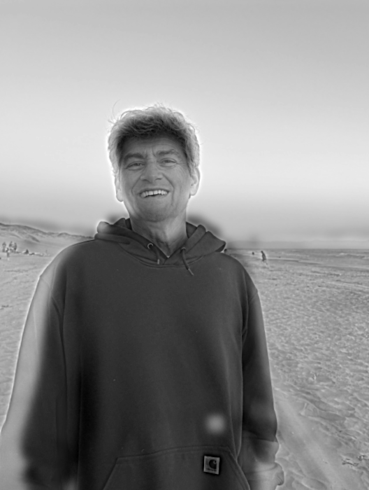
This pair works especially well because the pose, hoodie and beach match almost exactly. Up close, the gray hair texture and smile lines dominate. From far away those fine details vanish and the smoother, younger face takes over. It's a change over time.
My dog: curious vs. grinning
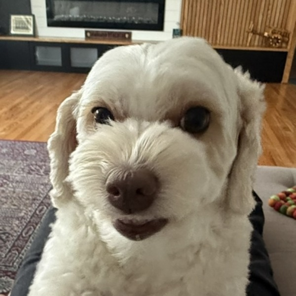
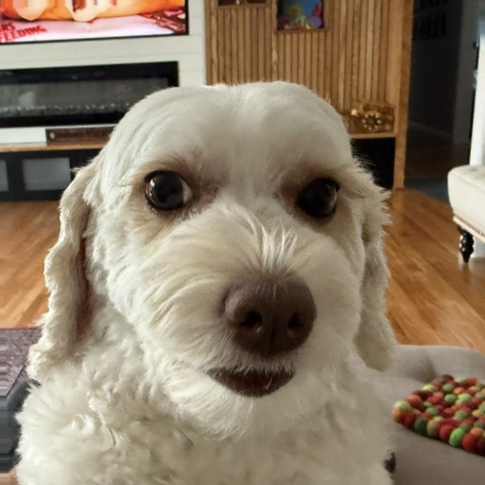
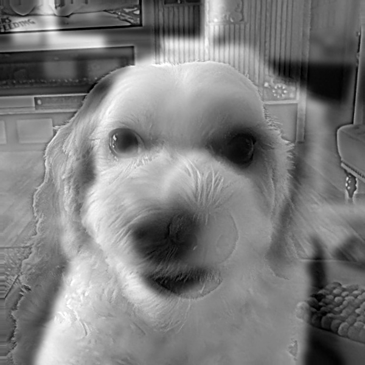
A change of expression. The dog was much closer to the camera in one photo, so I cropped both to the same head framing before aligning. Otherwise, the large rescale smeared the image edges. Up close, the fur texture and the wide-eyed, closed-mouth look come through. From a distance, the grin's dark mouth shape takes over.
Bells & Whistles: color
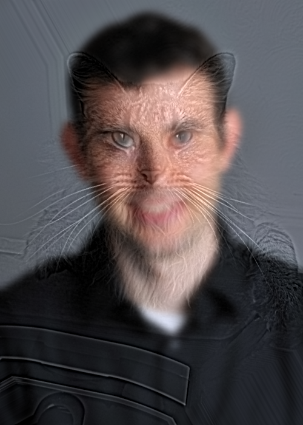
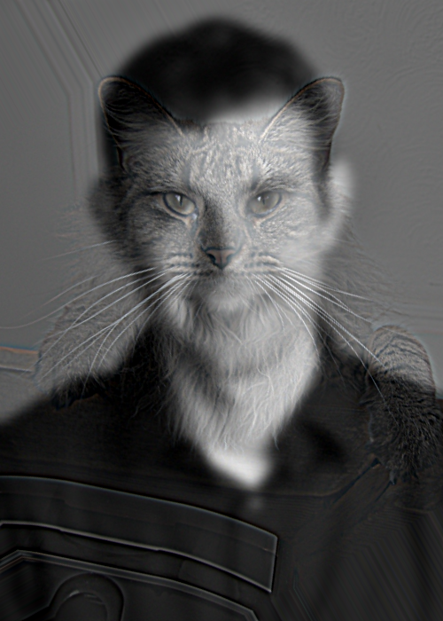
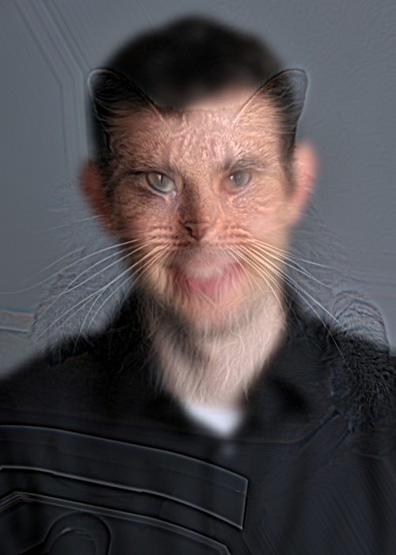
Color works best in the low-frequency image. Color mostly lives in large, smooth regions, which is exactly what a low-pass keeps, so it strengthens the far-away interpretation (Derek's skin tone) without interfering up close. In the high-pass image, color survives only as thin fringes along edges, so it adds very little. Using color in both gives the richest image, but the low-frequency color then dominates and makes the close-up cat harder to see.
A stack is a pyramid without downsampling: every level stays full size. Each Gaussian level blurs the previous one, with σ doubling each level (2, 4, 8, 16, 32) to mimic a pyramid halving its resolution. Each Laplacian level is the difference between two neighboring Gaussian levels, so it holds one band of frequencies. The last Laplacian level is the final Gaussian level, so summing all levels rebuilds the original exactly. The stacks are implemented from scratch; no built-in pyramid functions are used.
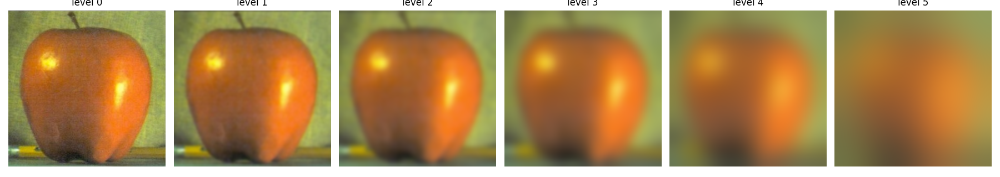


Recreating Figure 3.42 (Szeliski)
Rows show Laplacian levels 0, 2 and 4 and the summed result. Columns show the masked apple, the masked orange and their sum. At level 0 (fine detail) the switch between fruits is sharp; by level 4 (coarse color) it spreads across a wide band. That is why the final seam is invisible.
Following Burt & Adelson (1983), each frequency band is blended with a matching blur of the mask:
blend = Σi GMi · LAi + (1 − GMi) · LBi
where LA and LB are the Laplacian stacks of the two images and GM is the Gaussian stack of the mask (σ starting at 8). Fine details switch sharply at the seam while smooth color is mixed over a wide band. With stacks, the mask must be blurred explicitly; there is no downsampling to soften it. Each blend below is shown next to a hard paste with the same mask for comparison.
The oraple (vertical seam)


Morning and evening at the same beach (horizontal seam)
The hard paste leaves a sharp line across the sky where peach meets pink. The blend fades the morning sky into the evening sky so smoothly that it reads as a single sunset photo. Because the horizon sits at the same height in both photos, the sea and sky line up naturally.
My face in a painting (irregular mask)
I scaled and positioned the selfie so my eyes land on the painted eyes, then used an ellipse around the face as the mask. The hard paste shows an obvious oval "sticker." In the blend, the painting's green seeps into the edges of my face and fades toward the center. That's the low-frequency color being mixed over a wide band, while my eyes, nose and mouth stay sharp because the high-frequency levels switch at the mask boundary.
Laplacian stack of my favorite blend (Figure 10 style)
Bells & Whistles: color

Blending each RGB channel separately makes the results much more convincing. The apple-red to orange-orange hue shift transitions as smoothly as the brightness does, because color differences live mostly in the low frequency levels, which get the widest transition. The painting blend depends on this entirely: in grayscale the green tint that ties my face into the painting would be lost.
The most important thing I learned is that an image is a mix of low and high frequencies, and that almost everything in this project comes down to separating and recombining them. Low frequencies carry the smooth parts of a picture, like overall shape, color and lighting; high frequencies carry the edges and fine texture. A single Gaussian blur splits the two apart: the blur keeps the lows, and subtracting it from the original leaves the highs. Once I understood that, sharpening, hybrid images and blending stopped feeling like three separate tricks. Sharpening adds extra highs back in, a hybrid image takes the lows from one photo and the highs from another, and multiresolution blending mixes each frequency band with its own amount of blur on the mask.
What surprised me most was how directly this matches the way we see. My young and older photos turn into a completely different picture depending on how far away I stand, because my eyes stop resolving fine detail at a distance. The painting blend made the same idea visible in a different way: my eyes, nose and mouth stay sharp while the painting's green seeps into the edges of my face, because the fine details switch at the mask boundary while the color fades across a wide band.
I also learned that the algorithm is only half of the result. My first dog hybrid looked terrible until I cropped both photos to the same framing, and my motion-blurred photos barely improved with sharpening, because sharpening can only amplify edges that are still there. It can't recover detail the camera never captured. Choosing good input images, aligning them carefully and tuning values like σ and the edge threshold by eye mattered just as much as writing correct code. Even the convolution itself taught me this: my from-scratch loops gave exactly the same answer as scipy but ran hundreds of times slower, which made it clear why real image processing relies on optimized libraries.